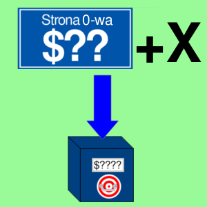
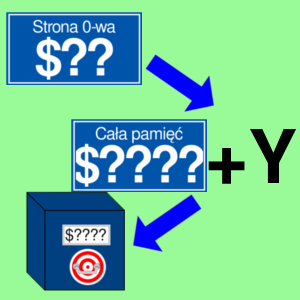

SBC
Odejmowanie z pożyczką
Opis
Operacja odejmowania realizowana w procesorze 6502. Pierwszy składnik jest pobierany z akumulatora, natomiast drugi jest pobierany z pamięci. Wynik jest zapisywany w akumulatorze.
Flaga przeniesienia przejmuje rolę negacji pożyczki. Oznacza to, że jeśli flaga przeniesienia ma wartość 0, to od wyniku odejmujemy jeden, czyli pożyczkę. Gdy odejmujemy większą liczbę od mniejszej, to wtedy flaga przeniesienia ma wartość 1, gdyż wtedy nie nastąpiła pożyczka. Jest to przydatna funkcja, gdy chcemy odejmować liczby w reprezentacji NKB nie mieszczące się w jednym bajcie np. po odjęciu liczb $05 (5D) i $FF (255D). Wyjdzie wtedy liczba $FF06, a tylko najmłodszy bajt tej liczby może się zmieścić w akumulatorze. Na szczęście za pomocą pożyczki możesz odjąć starszy bajt poprzedzający (lub następujący w little endian) od jeden, dzięki czemu można zapisać dwubajtową różnicę. Ponieważ nastąpiła pożyczka, flaga przeniesienia została wyczyszczona.
Jednak możliwość odejmowania z pożyczką ma też wadę - jeśli flaga przeniesienia miała wartość 0, to wtedy różnica zapisana w akumulatorze jest o jeden mniejsza, niż suma dwóch liczb, które biorą w operacji, np. gdy odejmiemy liczby $05 i $02, a flaga przeniesienia jest wtedy równa 0, to akumulator przyjmie wartość $02, a to nie jest różnica liczb $05 i $02. Powodem jest odjęcie pożyczki do właściwego wyniku. Różnica dwóch liczb podanych w przykładzie jest równa $03, więc odjęcie pożyczki daje liczbę $02. Dlatego należy zastosować operację SEC przed odejmowaniem, jeśli przeniesienie jest równe 0.
Liczby w operacji dodawania są ze znakiem (U2). Jeśli poprawnej różnicy nie można przedstawić w reprezentacji U2 dla jednego bajtu, to wtedy jest ustawiana flaga przepełnienia (V) na wartość 1. Na przykład różnica liczb $80 (10000000B, -128D) i $01 (00000001B, 1D) wynosi -129. Liczba ta w systemie binarnym ma wartość 01111111, a taka w reprezentacji U2 ma wartość 127, co nie jest poprawnym wynikiem.
W prawdziwym procesorze 6502, jeśli flaga D jest ustawiona na jeden, liczby są w kodowaniu BCD. Jednak w tej symulacji składniki zawsze są w reprezentacji U2, niezależnie od stanu flagi D.
Rozkaz SBC odpowiada w przybliżeniu sekwencji instrukcji w języku wysokiego poziomu: A = A - L - C; C = 1;, gdzie L oznacza liczbę ze znakiem.
Operacja wpływa na flagi: N, V, Z, C.
Tabela opkodów
| Opkod | Tryb adresowania | Czas wykonywania (cykle) |
|---|---|---|
| $E9 |  |
2 |
| $E5 |  |
3 |
| $F5 |  | 4 |
| $ED |  |
4 |
| $FD |  |
4* |
| $F9 |  |
4* |
| $E1 |  |
6 |
| $F1 |  | 5* |